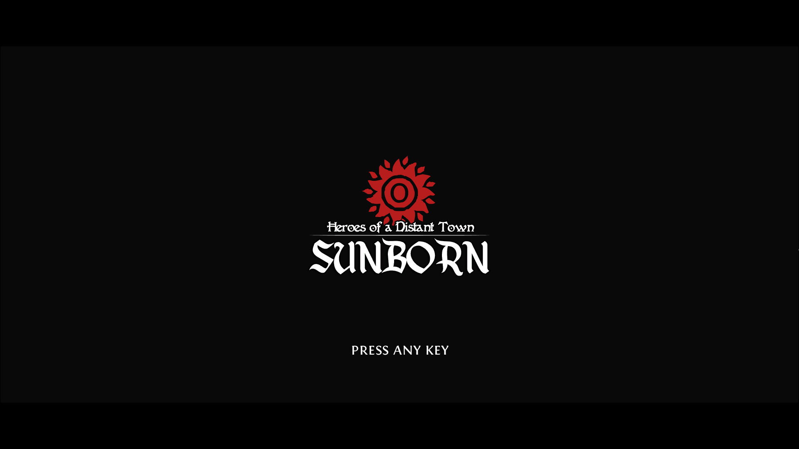
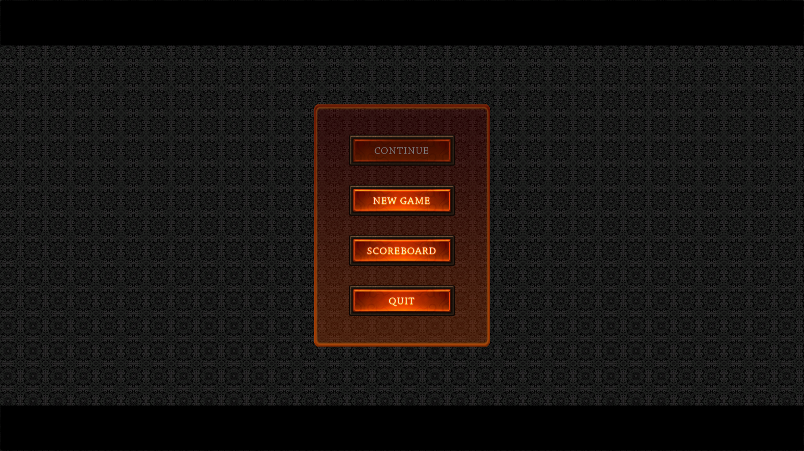
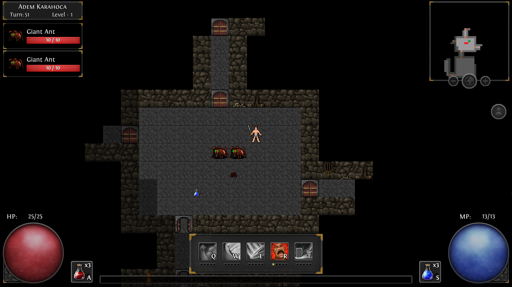
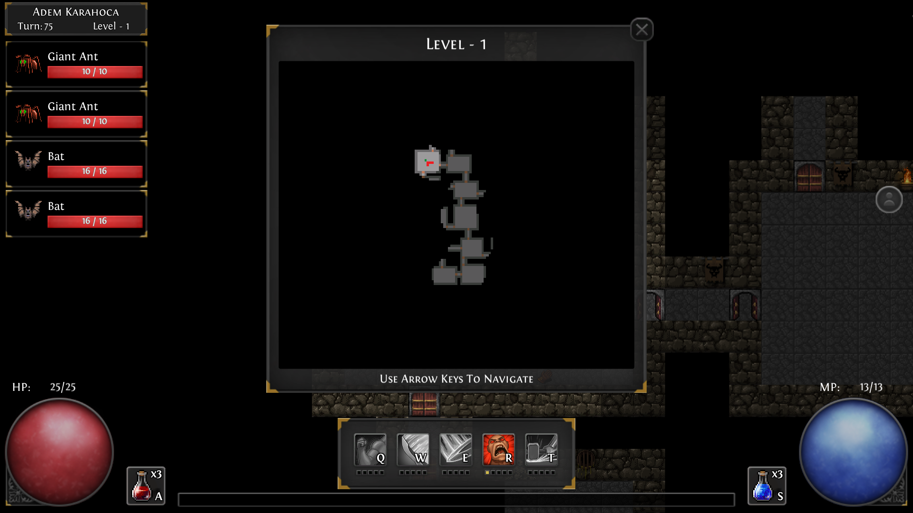

Heroes of a Distant Town: Sunborn is an adventure RPG which consists features to expand common target audience of rogue-like games. Rogue-Like games are typically video games which include randomly generated levels with permanent death rule which makes players start all over again from the very beginning of the game once they die. They are usually meant to be played by hardcore gamers who seek real challenge. As a result, casual gamers tend to stay away or get bored easily because of unforgiving mechanics of rogue-likes. These games have most of the time a shallow story and prevent players from feeling any kind of progress in the game once they die. Even for hardcore players, a game which is only about slaying enemies becomes boring quickly.
That’s why I wanted to create a game which can be challenging, intriguing and fun for hardcore and casual gamers at the same time. In order to achieve this, first of all, addition to traditional RPG elements of rogue-like games, a deep story must be implemented. Later, the game must be made forgiving for casual players by adding base building system which will boost players’ each run further as they play. Finally, small additions like puzzles, gambling, discovery system etc. to prevent the game becoming only about killing enemies.
Heroes of a Distant Town: Sunborn is a mainly 2D top-down game about sending adventurers from a random pool into unknown. After each run, the player will be able to develop and manage the town in order to boost his/her next run. Even if the player let his/her chosen adventurer die, he/she will be able to develop the town. The feeling of progress will be achieved by this means until the player solves the mysteries of the pit and concludes the game.